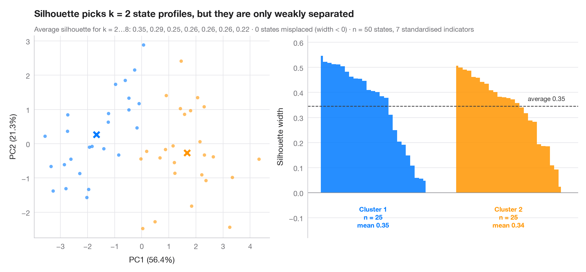

k-means のシルエットプロット
PCA 空間上の k-means クラスターと、観測値ごとのシルエット幅を並べて示します。

シルエット幅は、各観測値が自身のクラスターにどれだけ近いかを、最も近い他のクラスターへの近さと比較したものです。1 に近ければ適切に配置されており、0 に近ければ境界上、負であれば誤って割り当てられている可能性があります。クラスター数 k は、平均シルエットが最も高いもの（2 から 8 を試行）を選んでいます。左のパネルは第1・第2主成分上のクラスターを示し、右のパネルは各クラスター内でシルエット幅を並べ替えたもので、破線は全体の平均です。
データは scikit-learn のワインデータセットに含まれる、標準化した 13 種類の化学的測定値です。処理には sklearn の KMeans、silhouette_score、silhouette_samples を用いており、PCA はクラスターの描画にのみ使用しています。
コードおよび図中のテキストは英語です。
import matplotlib.pyplot as plt
import numpy as np
from sklearn.cluster import KMeans
from sklearn.datasets import load_wine
from sklearn.decomposition import PCA
from sklearn.metrics import adjusted_rand_score, silhouette_samples, silhouette_score
from sklearn.preprocessing import StandardScaler
wine = load_wine()
X = StandardScaler().fit_transform(wine.data)
# Choose k by the average silhouette width
fits = {k: KMeans(k, n_init=20, random_state=1).fit(X) for k in range(2, 9)}
avg = {k: silhouette_score(X, m.labels_) for k, m in fits.items()}
k = max(avg, key=avg.get)
labels = fits[k].labels_
sil = silhouette_samples(X, labels)
colors = ["#007AFF", "#FF9500", "#34C759", "#FF3B30", "#AF52DE", "#5AC8FA", "#8E8E93", "#A2845E"]
fig, (ax1, ax2) = plt.subplots(1, 2, figsize=(11, 5), width_ratios=[1, 1.15])
# Left: clusters projected on the first two principal components
pca = PCA(2).fit(X)
S, C = pca.transform(X), pca.transform(fits[k].cluster_centers_)
for j in range(k):
ax1.scatter(*S[labels == j].T, s=22, color=colors[j], alpha=0.6, lw=0)
ax1.scatter(*C[j], s=150, marker="X", color=colors[j], edgecolor="white", lw=1.5, zorder=3)
ax1.set_xlabel(f"PC1 ({100 * pca.explained_variance_ratio_[0]:.1f}%)")
ax1.set_ylabel(f"PC2 ({100 * pca.explained_variance_ratio_[1]:.1f}%)")
ax1.grid(axis="x")
# Right: silhouette widths, sorted within cluster
start = 0
for j in range(k):
s = np.sort(sil[labels == j])[::-1]
x = np.arange(start, start + len(s))
ax2.fill_between(x, 0, s, color=colors[j], step="mid", lw=0, alpha=0.85)
ax2.text(x.mean(), -0.05, f"Cluster {j + 1}\nn = {len(s)}\nmean {s.mean():.2f}",
ha="center", va="top", fontsize=9, color=colors[j], fontweight="semibold")
start += len(s) + 6
ax2.axhline(avg[k], color="#3A3A3C", ls="--", lw=1)
ax2.text(start - 6, avg[k] + 0.015, f"average {avg[k]:.2f}", ha="right", va="bottom",
fontsize=9, color="#3A3A3C")
ax2.axhline(0, color="#8E8E93", lw=0.8)
ax2.set_xticks([])
ax2.set_xlim(-3, start - 3)
ax2.set_ylim(-0.18, max(sil) + 0.08)
ax2.set_ylabel("Silhouette width")
ax2.spines["bottom"].set_visible(False)
ax1.set_title(f"Silhouette picks k = {k}, recovering the three wine cultivars", pad=26)
ax1.text(0, 1.02, "Average silhouette for k = 2…8: " + ", ".join(f"{v:.2f}" for v in avg.values())
+ f" · agreement with cultivar: ARI = {adjusted_rand_score(wine.target, labels):.2f}"
f" · n = {len(X)}", transform=ax1.transAxes, fontsize=9.5, color="#6E6E73",
in_layout=False)
plt.show()
図にはオプションの PyStatlas スタイル を使用しています。同じ見た目にするには plt.style.use("pystatlas.mplstyle") を追加してください。
引用方法
PyStatlas は Thierry Warin が作成・運営しています。研究や業務に役立った場合は、ぜひ引用してください。
Warin, T. (2026). Silhouette plot for k-means. In PyStatlas: The Python Gallery of Statistical Graphics. https://warint.github.io/pystatlas/multivariate/silhouette-clusters/
@misc{warin2026statlas,
author = {Warin, Thierry},
title = {PyStatlas: The Python Gallery of Statistical Graphics},
year = {2026},
howpublished = {\url{https://warint.github.io/pystatlas/}},
note = {Source code: https://github.com/warint/pystatlas}
}